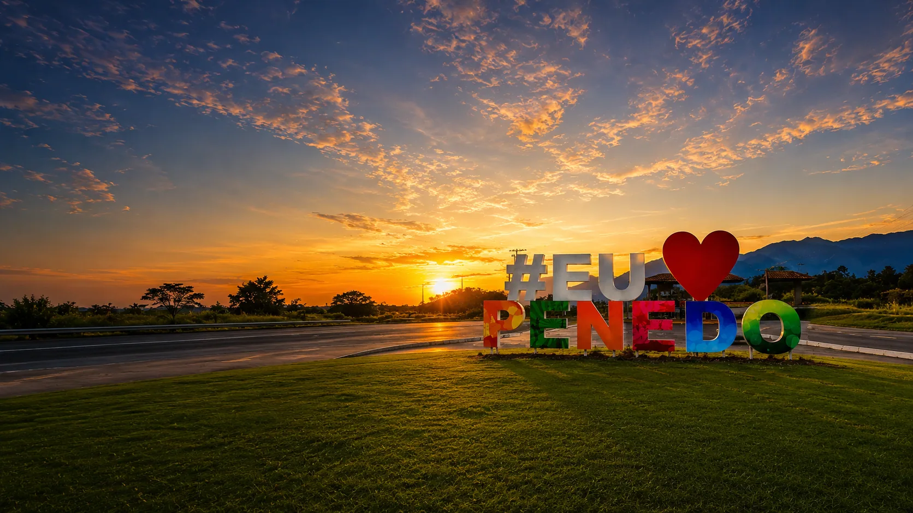
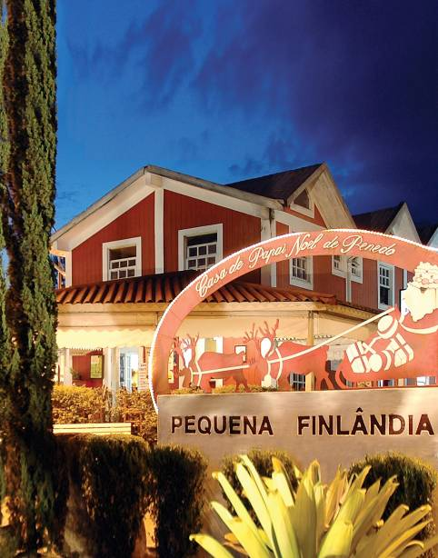
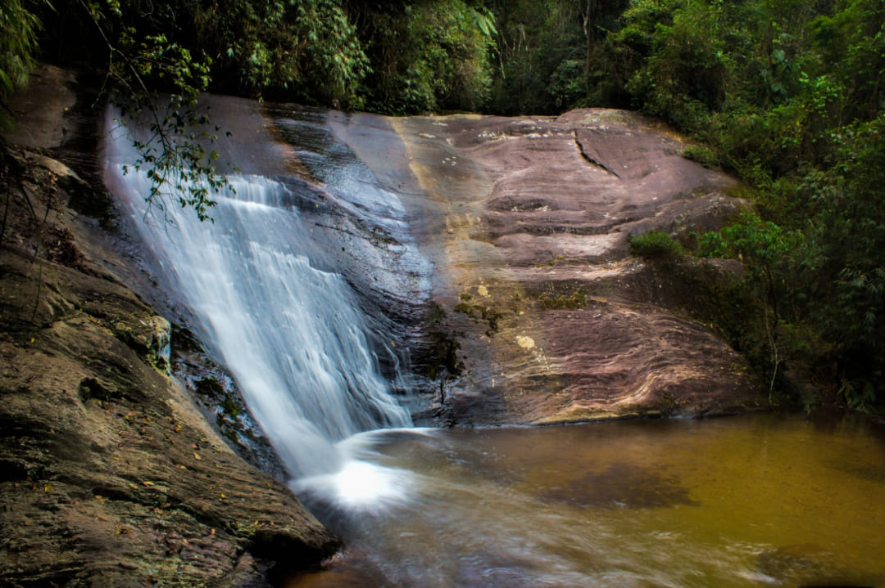
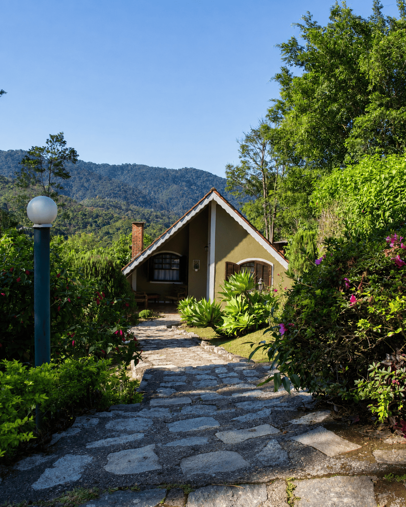

Seu próximo destino
Penedo,
entre a serra
e a magia.
Um convite para descobrir o destino no seu ritmo.

Seu próximo destino
Um convite para descobrir o destino no seu ritmo.

Penedo, RJ
Na Pequena Finlândia, a arquitetura, as lojas e os sabores dão ao passeio um charme próprio. É um bom começo para descobrir o destino sem pressa.

Respire a serra
Penedo também convida a sair do centrinho: há cachoeiras, trilhas e paisagens da Mantiqueira para quem quer respirar outros ares. Confira as condições de acesso antes de ir.
Uma pausa gostosa
Entre cafés, chocolates e restaurantes, a gastronomia faz parte do passeio. Reserve tempo para descobrir o que combina com o seu roteiro.

A viagem é sua
Uma escapada a dois, um passeio em família ou alguns dias de descanso: Penedo oferece diferentes maneiras de aproveitar a serra.
Comece a planejar
Encontre ideias de hospedagem, gastronomia e lazer no nosso site.
vemprapenedo.com.br